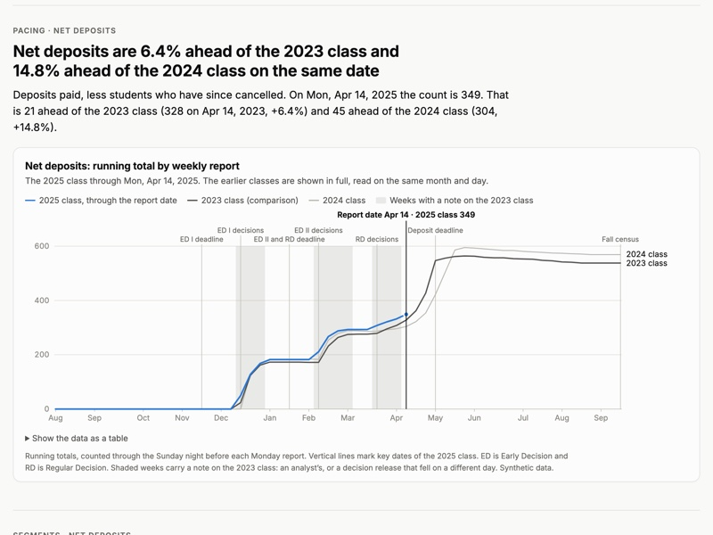

The weekly operating report
Weekly admissions pacing report
The Monday-morning report an admissions office runs on. It shows where this year's class stands against the same date in earlier years at every stage from inquiry to deposit, breaks that down by round, territory, and student group, and projects where the class will land. Pick any report date and it shows only what was known that morning.
- Synthetic records for an invented college, shaped like exports from an admissions system, an aid system, and an athletics system, with the flaws real exports carry. Six cleaning rules recover the reported totals exactly.
- Three ways to project the class, tested week by week against the class that enrolled. The plain SQL method held its own against a statistical model, and the page says so.
- 32 accuracy checks. One deletes everything after a report date, rebuilds the model, and requires that day's report to be unchanged.